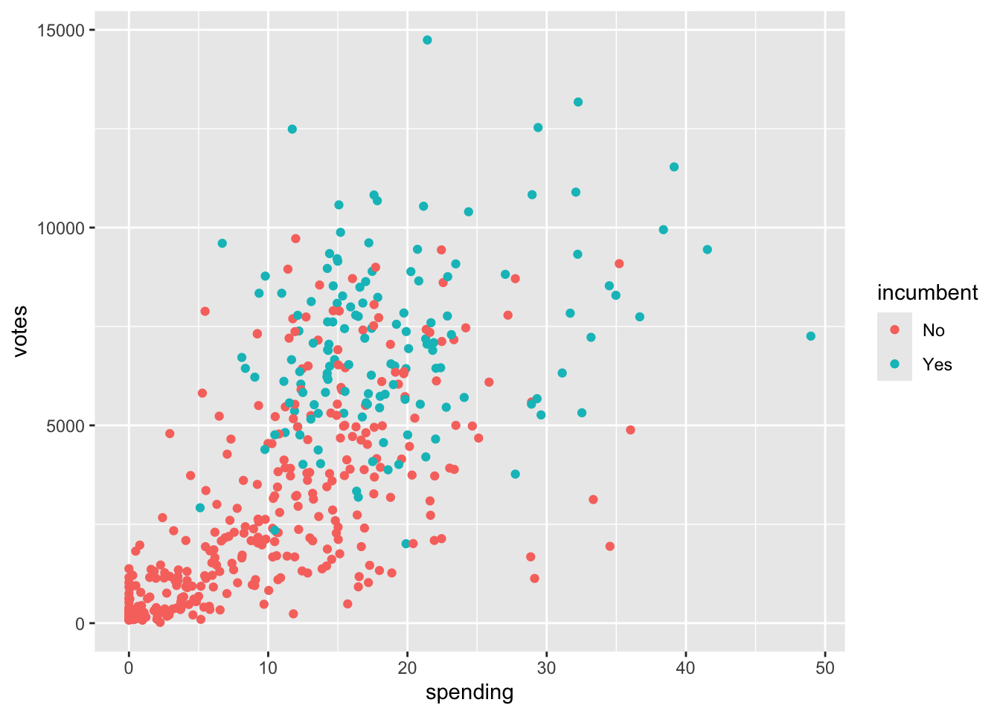
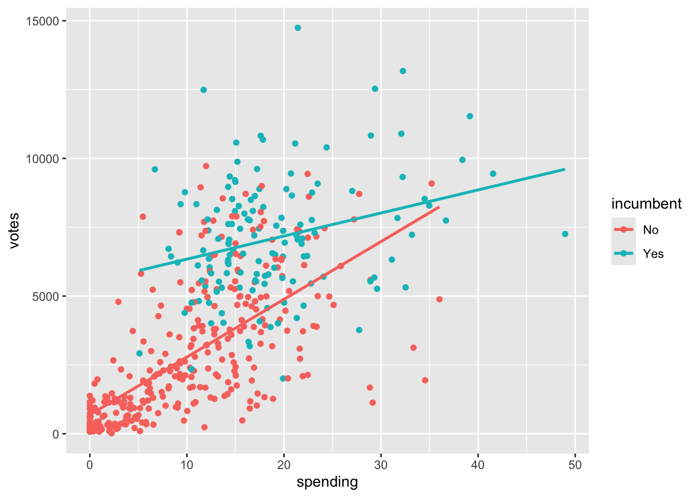
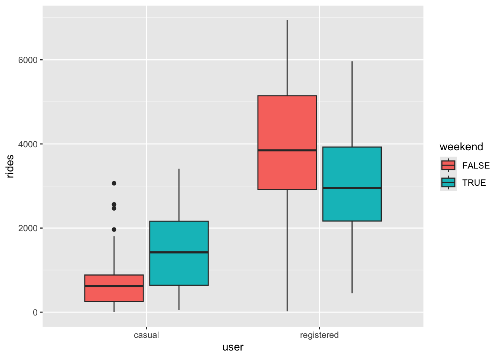
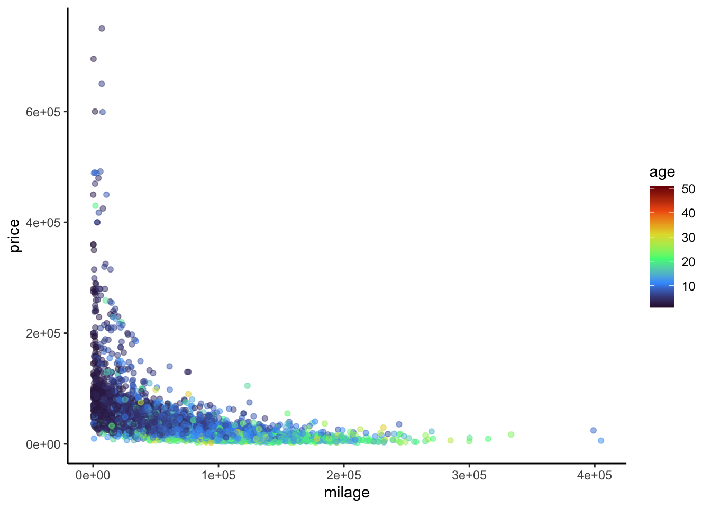
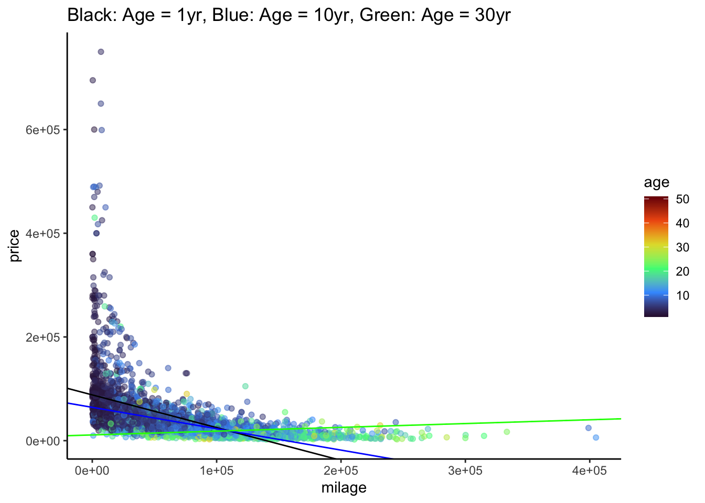

# Load packages and import data
library(ggplot2)
library(dplyr)
library(readr)
library(stringr)
library(tidyr)
bikes <- read_csv("https://mac-stat.github.io/data/bikeshare.csv")
# A little bit of data wrangling code - let's not focus on this for now
campaigns <- read_csv("https://mac-stat.github.io/data/campaign_spending.csv") %>%
dplyr::select(wholename, district, votes, incumbent, spending) %>%
mutate(spending = spending / 1000) %>%
filter(!is.na(spending))
# A little bit of data wrangling code - let's not focus on this for now
cars <- read_csv("https://mac-stat.github.io/data/used_cars.csv") %>%
mutate(milage = milage %>% str_replace(",","") %>% str_replace(" mi.","") %>% as.numeric(),
price = price %>% str_replace(",","") %>% str_replace("\\$","") %>% as.numeric(),
age = 2025 - model_year) # 2025 so that yr. 2024 cars are one year oldMultiple linear regression: interaction terms practice
Notes and in-class exercises
Notes
- You can download a template file to work with here.
- File organization: Save this file in the “Activities” subfolder of your “STAT155” folder.
Learning goals
By the end of this lesson, you should be able to:
- Visualize interactions between categorical and quantitative predictors using scatterplots and side-by-side or boxplots
- Critically think through whether an interaction term makes sense, or should be included in a multiple linear regression model
- Write a model formula for a multiple linear regression model with an interaction term between two quantitative predictors, two categorical predictors, or one quantitative and one categorical predictor
- Interpret the intercept and slope coefficients in a multiple linear regression model with an interaction term
Readings and videos
Choose either the reading or the videos to go through before class.
- Reading: Section 3.9.3 in the STAT 155 Notes
- Video:
Exercises
Context: Today we’ll explore data on incumbency and campaign spending, revisit the bikes data we’ve looked at previously in this course, and explore data on characteristics of used cars. Read in the data below.
For the first several exercises, we’ll consider the following research questions:
What role does campaign spending play in elections?
- Do candidates that spend more money tend to get more votes?
- How might this depend upon whether a candidate is an incumbent (they are running for RE-election) or a challenger (they are challenging the incumbent)?
We’ll use data collected by Benoit and Marsh (2008) on the campaign spending of 464 candidates in the 2002 Irish Dail elections (Ireland’s version of the U.S. House of Representatives) to explore these questions. The units of spending are 1,000 Euros.
Exercise 1: Translating scientific questions into statistical questions
- Look at the variables we have access to in the cleaned version of the data we read into R, and consider our first research question. How might we translate this question into a statistical one, that we could answer using the data we have available?
There is no one right answer to this! Brainstorm with your group.
head(campaigns)- Question 2 (a) is a bit more specific than Question 1. Translate this question into a statistical one that can be answered using a simple linear regression model. Write out the model statement in \(E[Y | X] = ...\) notation that would answer this question, and note which regression coefficient you would interpret to provide you with an answer.
\[ E[___ | ___] = ... \]
- Question 2 (b) is also specific, and builds on Question 2 (a). Translate this question into a statistical one that can be answered using a multiple linear regression model. Write out the model statement in \(E[Y | X] = ...\) notation that would answer this question, and note which regression coefficient you would interpret to provide you with an answer.
\[ E[___ | ___] = ... \]
Exercise 2: Visualizing Interaction
- Write R code to visualize the relationship between campaign spending and number of votes a candidate received. Include an aesthetic to distinguish this relationship between incumbents and challengers. Do not include lines of best fit from any statistical model on your plot at this point!
# VisualizationBased on your visualization from part (a), what are your answers to research questions 2 (a) and 2 (b)? Write your answer in 2-3 sentences, describing general trends you notice, suitable for a general audience.
Add lines of best fit from a statistical model that includes an interaction term between incumbent status and spending to your plot from part (a), using
geom_smooth. Based on your updated plot, do you think including an interaction between incumbent status and spending in a multiple linear regression model would be meaningful in this context? Why or why not?
# Visualization with lines of best fitExercise 3: Fitting and interpreting models with interaction terms
- Fit the regression model you wrote out in Exercise 1 (c). Report (do not interpret yet!) the regression coefficients below.
# Model with interaction term(Intercept):
incumbentYes:
spending:
incumbentYes:spending:
- Using the coefficient estimates from part (a), write out two separate model statements, one for incumbents and one for challengers. Combine terms (using algebra) when you can! Hint: remember the indicator variables video!
- For incumbents:
\[ E[votes | spending] = \]
- For challengers:
\[ E[votes | spending] = \]
Interpret the coefficient for
incumbentin your interaction model, in context. Make sure to use non-causal language, include units, and talk about averages rather than individual cases. Is this coefficient scientifically meaningful?When interpreting an interaction coefficient where one of the variables interacting is quantitative and one is categorical, it is often convenient to do so in separate sentences: interpret the slope for each category separately!
Interpret the coefficient for the interaction term in your model, in context. Make sure to use non-causal language, include units, and talk about averages rather than individual cases.
- Based on your interpretation in part (d), and the visualization you made including lines of best fit, do you think that including an interaction term for incumbent status and spending is meaningful, when predicting number of votes? Explain why or why not.
Exercise 4: Interactions between two categorical variables
Let’s return to our data on bike ridership. Suppose we are interested in the relationship between daily ridership (our response variable) and whether a user is a casual or registered rider and whether the day falls on a weekend. First, we need to create a binary variable indicating whether a user is a casual or registered rider.
# Creating user variable, don't worry about syntax!
new_bikes <- bikes %>%
dplyr::select(riders_casual, riders_registered, weekend, temp_actual) %>%
pivot_longer(cols = riders_casual:riders_registered, names_to = "user",
names_prefix = "riders_", values_to = "rides") %>%
mutate(weekend = factor(weekend))- For each of our three relevant variables,
weekend,user, andrides, classify them as quantitative or categorical.
weekend:
user:
rides:
- Make an appropriate visualization to explore the relationship between these three variables.
# VisualizationIs the relationship between ridership and weekend status the same for both registered and casual users? Explain why or why not, referencing the visualization you made in part (b).
To reflect what you observed in your visualization, fit a multiple linear regression model with an interaction term between
weekendanduserin our model of ridership.
# Multiple linear regression model- Interpret the interaction term from your model, in context. Make sure to use non-causal language, include units, and talk about averages rather than individual cases. Just as in Exercise 3, you may find it useful to first write out multiple model statements for different categories defined by one of your categorical variables, and proceed from there!
Exercise 5: Interactions between two quantitative variables
Here we’ll explore the relationship between price, milage, and age of a used car. Below is a scatterplot of mileage vs. price, colored by age:
cars %>%
ggplot(aes(x = milage, y = price, col = age)) +
geom_point(alpha = 0.5) + # make the points less opaque
scale_color_viridis_c(option = "H") + # a fun, colorblind-friendly palette!
theme_classic() # removes the gray background and gridIt’s a little difficult to tell what exactly is going on here. In particular, does the relationship between mileage and price vary with age of a used car? Let’s try adding some fitted lines for cars of different ages.
# Ignore where the numbers in geom_abline() came from for now... we'll get there
cars %>%
ggplot(aes(x = milage, y = price, col = age)) +
geom_point(alpha = 0.5) +
scale_color_viridis_c(option = "H") +
theme_classic() +
geom_abline(slope = -6.558e-01 + 2.431e-02, intercept = 9.096e+04 -2.665e+03, col = "black") +
geom_abline(slope = -6.558e-01 + 10 * 2.431e-02, intercept = 9.096e+04 - 10 * 2.665e+03, col = "blue") +
geom_abline(slope = -6.558e-01 + 30 * 2.431e-02, intercept = 9.096e+04 - 30 * 2.665e+03, col = "green") +
ggtitle("Black: Age = 1yr, Blue: Age = 10yr, Green: Age = 30yr")- Challenge question: Based on the fitted lines in the plot above, anticipate what the signs (positive or negative) of the coefficients in the following interaction model will be:
\[ E[price | age, milage] = \beta_0 + \beta_1 milage + \beta_2 age + \beta_3 milage:age \] * \(\beta_0\): Put your response here…
\(\beta_1\): Put your response here…
\(\beta_2\): Put your response here…
\(\beta_3\): Put your response here…
- Fit a multiple linear regression model with an interaction term between
milageandagein our model of used carprice.
# Multiple linear regression model
# ... now do you see where the numbers in geom_abline() came from?As before, we could choose distinct ages, and interpret the relationship between mileage and price for each of those groups separately. However, since age is quantitative and not categorical, this doesn’t quite give us the whole picture. Instead, we want to know how the relationship between mileage and price changes for each additional year old a car is. This is what the interaction coefficient estimates, when the interaction term is between two quantitative variables!
- Interpret the interaction term, in context. Make sure to use non-causal language, include units, and talk about averages rather than individual cases.
Reflection
Through the exercises above, you practiced visualizing, fitting, and interpreting multiple linear regression models with interaction terms between combinations of categorical and quantitative variables. Think about how the fitted lines looked in situations where you think there was a meaningful interaction taking place. How do you think the fitted lines would look if there was no meaningful interaction present? Explain your reasoning.
Response: Put your response here.
Render your work
- Click the “Render” button in the menu bar for this pane (blue arrow pointing right). This will create an HTML file containing all of the directions, code, and responses from this activity. A preview of the HTML will appear in the browser.
- Scroll through and inspect the document to check that your work translated to the HTML format correctly.
- Close the browser tab.
- Go to the “Background Jobs” pane in RStudio and click the Stop button to end the rendering process.
- Navigate to your “Activities” subfolder within your “STAT155” folder and locate the HTML file. You can open it again in your browser to double check.
Solutions
Exercise 1: Translating scientific questions into statistical questions
From this question, the only clear variable that should be involved in our analysis/exploration is spending. We could first begin by providing numerical and visual summaries of campaign spending. We could also look at whether spending varies by district, number of votes, or incumbency status. This would give us a broad idea of how campaign spending may vary across the variables we access to in our data.
We can estimate the average associated increase in number of votes per additional 1,000 Euros spent, via a simple linear regression model. The model statement that allows us to answer this question is given by
\[ E[votes | spending] = \beta_0 + \beta_1 spending \]
The regression coefficient we would interpret to answer this question is the coefficient for spending, which in this case is \(\beta_1\).
- We are interested in the how the association between average number of votes and campaign spending varies by incumbency status. The model statement that allows us to answer this question is given by
\[ E[votes | spending, incumbent] = \beta_0 + \beta_1 spending + \beta_2 incumbent + \beta_3 spending:incumbent \]
(Note: the order in which you put spending and incumbent status does not matter!)
The regression coefficient we would interpret to answer this question is the interaction coefficient, which in this case is \(\beta_3\).
Exercise 2: Visualizing Interaction
# Visualization
campaigns %>%
ggplot(aes(spending, votes, col = incumbent)) +
geom_point()
In general, the more a candidate spends on their campaign, the more votes they receive. Incumbents appear to spend less than challengers on their campaigns, typically. The impact of spending on votes appears to be greater for challengers than for incumbents, in that more spending may lead to even more votes for challengers, than it would for incumbents.
I think including an interaction term between incumbent status and spending would be meaningful, since the relationship between spending and votes does seem to vary by incumbent status. In particular, note that the lines on the visualization are not parallel. Parallel lines imply that there is no interaction present, so the further the lines are from parallel, the greater the degree of interaction between the two variables.
# Visualization with lines of best fit
campaigns %>%
ggplot(aes(spending, votes, col = incumbent)) +
geom_point() +
geom_smooth(method = "lm", se = FALSE)`geom_smooth()` using formula = 'y ~ x'
Exercise 3: Fitting and interpreting models with interaction terms
# Model with interaction term
lm(data = campaigns, votes ~ spending*incumbent)
Call:
lm(formula = votes ~ spending * incumbent, data = campaigns)
Coefficients:
(Intercept) spending incumbentYes
690.5 209.7 4813.9
spending:incumbentYes
-125.9 (Intercept): 690.5
incumbentYes: 4813.9
spending: 209.7
incumbentYes:spending: -125.9
- For incumbents:
\[ E[votes | spending] = 690 + 4813.9 + 209.7 * spending - 125.9 * spending = 5503.9 + 83.8 * spending \]
- For challengers:
\[ E[votes | spending] = 690.5 + 209.7 * spending \]
On average, we expect the difference in number of votes between incumbents and challengers to be 4813.9, for campaigns where no money is spent. This is likely not a scientifically meaningful estimate since there are very few campaigns where no money is spent. However, such campaigns do exist, so I would say this one could be meaningful in certain contexts, if not broadly!
- On average, we expect an increase in spending by 1,000 euros to be associated with an increase in number of votes by 210, for challengers. On average, we expect an increase in spending by 1,000 euros to be associated with an increase in number of votes by 84, for incumbents.
- The average increase in votes per 1,000 Euros spent is 125.9 votes/1000 Euros lower for incumbents than for challengers. In other words, spending 1,000 Euros is associated with 125.9 fewer votes for incumbents than for challengers.
I think the interaction term is meaningful when predicting number of votes, since 84 and 210 are relatively different numbers! The interaction term gives us the additional information that spending has less of an effect on number of votes for incumbents than it does for challengers, which is particularly meaningful if you are a campaign manager!
Exercise 4: Interactions between two categorical variables
# Creating user variable, don't worry about syntax!
new_bikes <- bikes %>%
dplyr::select(riders_casual, riders_registered, weekend, temp_actual) %>%
pivot_longer(cols = riders_casual:riders_registered, names_to = "user",
names_prefix = "riders_", values_to = "rides") %>%
mutate(weekend = factor(weekend))
weekend: categorical (binary)
user: categorical (binary)
rides: quantitative
# Visualization
new_bikes %>%
ggplot(aes(y = rides, user, fill = weekend)) +
geom_boxplot()
The relationship between ridership and weekend status does not appear to be the same for registered and casual users. Specifically, casual users have higher median riders on weekends, whereas the opposite is true for registered users.
# Multiple linear regression model
lm(data = new_bikes, rides ~ user * weekend)
Call:
lm(formula = rides ~ user * weekend, data = new_bikes)
Coefficients:
(Intercept) userregistered
625.0 3300.5
weekendTRUE userregistered:weekendTRUE
776.7 -1714.4 - On average, we expect there to be 777 more rides on weekends compared to non-weekends, for casual riders. On average, we expect there to be 938 (776.7 - 1714.4, rounded) less rides on weekends compared to non-weekends, for registered riders.
- The average difference between weekend and weekday ridership is 1714.4 rides lower for registered riders than for casual riders.
Note: There are lots of ways you could correctly interpret the interaction term here! You could do it one sentence, you could do it in four (one for each unique group defined by the two categorical variables), or you could compare users and registered riders for weekends, and then separately for non-weekends! All are valid options.
Exercise 5: Interactions between two quantitative variables
Here we’ll explore the relationship between price, milage, and age of a used car. Below is a scatterplot of mileage vs. price, colored by age:
cars %>%
ggplot(aes(x = milage, y = price, col = age)) +
geom_point(alpha = 0.5) + # make the points less opaque
scale_color_viridis_c(option = "H") + # a fun, colorblind-friendly palette!
theme_classic() # removes the gray background and gridWarning: Removed 3 rows containing missing values or values outside the scale range
(`geom_point()`).
It’s a little difficult to tell what exactly is going on here. In particular, does the relationship between mileage and price vary with age of a used car? Let’s try adding some fitted lines for cars of different ages.
# Ignore where the numbers in geom_abline() came from for now... we'll get there
cars %>%
ggplot(aes(x = milage, y = price, col = age)) +
geom_point(alpha = 0.5) +
scale_color_viridis_c(option = "H") +
theme_classic() +
geom_abline(slope = -6.558e-01 + 2.431e-02, intercept = 9.096e+04 -2.665e+03, col = "black") +
geom_abline(slope = -6.558e-01 + 10 * 2.431e-02, intercept = 9.096e+04 - 10 * 2.665e+03, col = "blue") +
geom_abline(slope = -6.558e-01 + 30 * 2.431e-02, intercept = 9.096e+04 - 30 * 2.665e+03, col = "green") +
ggtitle("Black: Age = 1yr, Blue: Age = 10yr, Green: Age = 30yr")Warning: Removed 3 rows containing missing values or values outside the scale range
(`geom_point()`).
\[ E[price | age, milage] = \beta_0 + \beta_1 milage + \beta_2 age + \beta_3 milage:age \] * \(\beta_0\): positive, since the intercept is the average price for a car with zero miles that is brand new.
\(\beta_1\): negative, since the more miles a new car has, the cheaper it should be
\(\beta_2\): negative, since the intercept of the lines seems to decrease with age (black -> blue -> green)
\(\beta_3\): positive, since the slope of the lines seems to increase with age (black -> blue -> green)
# Multiple linear regression model
lm(data = cars, price ~ milage * age)
Call:
lm(formula = price ~ milage * age, data = cars)
Coefficients:
(Intercept) milage age milage:age
9.096e+04 -6.558e-01 -2.665e+03 2.431e-02 # ... now do you see where the numbers in geom_abline() came from?As before, we could choose distinct ages, and interpret the relationship between mileage and price for each of those groups separately. However, since age is quantitative and not categorical, this doesn’t quite give us the whole picture. Instead, we want to know how the relationship between mileage and price changes for each additional year old a car is. This is what the interaction coefficient estimates, when the interaction term is between two quantitative variables!
- On average, we expect that an increase in mileage by 1 mile is associated with an additional increase in price by $0.0243 for each additional year old the car is.